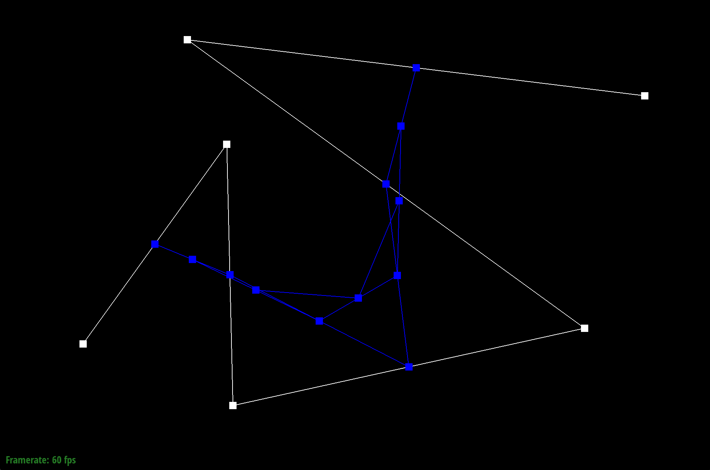
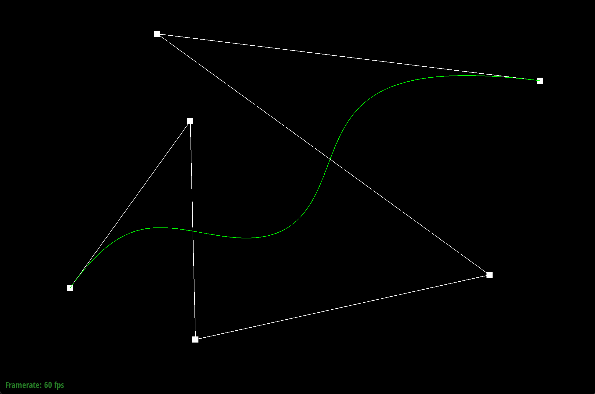
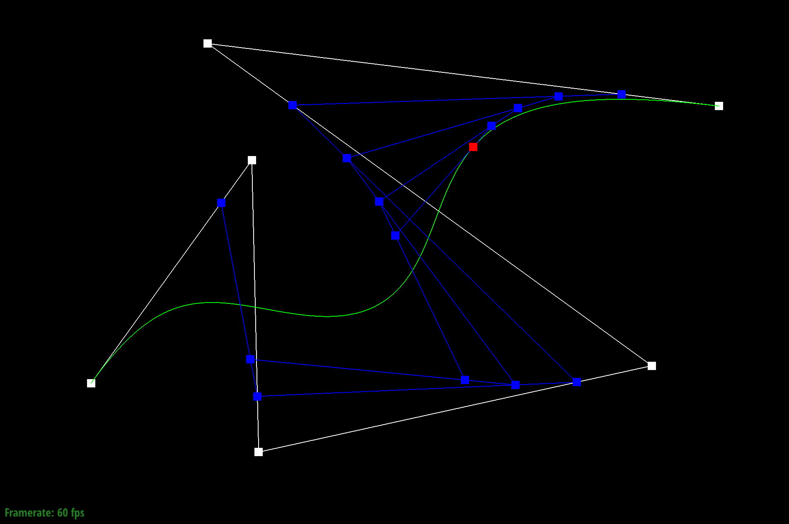
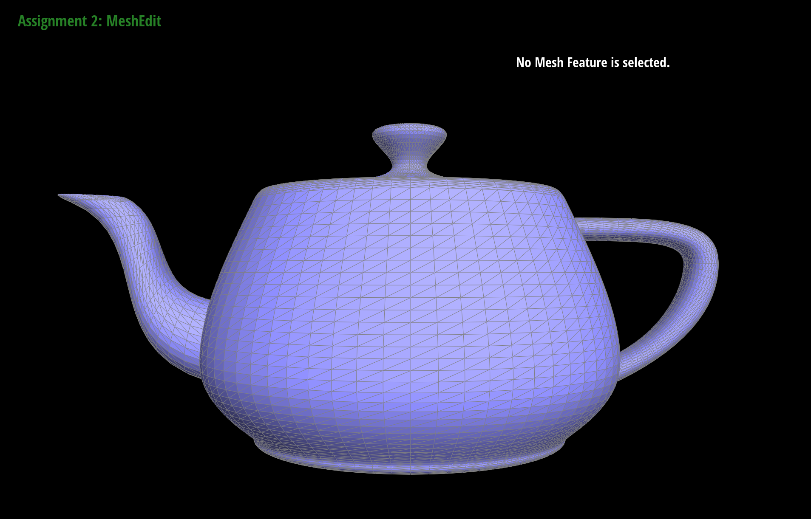

Overview
Give a high-level overview of what you implemented in this project. Think about what you've built as a whole. Share your thoughts on what interesting things you've learned from completing the project.
Section I: Bezier Curves and Surfaces
Part 1: Bezier curves with 1D de Casteljau subdivision
De Casteljau's algorithm is a recursive method to evaluate the Bezier curve of polynomials. The algorithm works as follows:
1. Consider n points on a Bézier curve with control points {P0,...,Pn} and ratio parameter t.
2. Perform a linear interpolation (lerp) between any two consecutive points. This will create n-1 points with a ratio of t between every two consecutive control points.
3. Connect these new points, and recursively lerp until left with 1 point at length t of the final line segment.
For our implementation, we created a helper lerp2D method that takes 2 input points and parameter t, and outputs a Vector2D
of where the new point is placed on the curve. We iterated through all given points, and used lerp2D to produce a list of
vectors that hold all points in one step of the algorithm. Thus, this function only evalues one level of subdivision in de Casteljau's
algorithm.
|
|
|
|

|
|
|
|
|
|

|

|

|
|
Part 2: Bezier surfaces with separable 1D de Casteljau subdivision
De Casteljau's algorithm naturally extends to Bezier surfaces. To produce a surface defined on a uv plane, let's consider a grid of nxn control points. For each n rows of the u-axis, we use de Casteljau tp produce a "slice" of the surface along the rows with their given control points. These n "slices" will produce n one-dimensional Bezier curves on the u-axis parameterized by u.
With our n u-parameterized 1D Bezier curves along the u-axis, we can apply the same logic in the v direction. For each column along the v-axis, we can use a point on our n u-parameterized Bezier curves as control points and apply 1D de Casteljau to produce a "slice" of the surface along each n column. These n "slices" will produce n one-dimensional Bezier curves on the v-axis parameterized by v. The n Bezier curves in both the u and v axes produce a Bezier surface defined on a uv plane.
As an exanple, a 4x4 grid of control points, each row produces 4 Bezier u-parameterized curves along the u-axis and each column produces 4 Bezier v-parameterized curves along the v-axis.
Separable 1D de Casteljau Implementation
In our implementation of separable 1D de Casteljau, we first defined BezierPatch::evaluateStep and helper
lerp3D methods that evalues one step of the de Casteljau's algorithm using a list of given points and a scalar
parameter t. These methods work exactly the same as BezierCurve::evaluateStep from task 1, except now redefined
using 3D vectors instead of 2D vectors.
From there, we defined BezierPatch::evaluate1D, which fully evaluates de Casteljau's algorithm for a vector of
points and parameter t by recursively calling evaluateStep. This function outputs a fully interpolated vector.
Finally, we defined BezierPatch::evaluate, which uses parameters u and v to evaluate the Bezier patch at (u, v).
This method defines the heart of the separable 1D de Casteljau algorithm. It first recursively calls evaluate1D
on all given control points with parameter u. These interpolated u-vectors are stored in a list of vectors, vec. After all
control points are evaluated in the u-axis, we evaluate the final interpolated vector in the v-axis by calling
evaluate(vec, v) one last time. This produces the final interpolated 3D vector evaluated at (u, v) of the Bezier Patch.
|

|
|
Section II: Sampling
Part 3: Average normals for half-edge meshes
To calculate the area-weighted vertex normal, we iterate through all faces (triangles) attached to the current vertex. We sum the normals of these faces, weighted by the faces' area, then convert to a unit vector. This unit vector is the area-weighted vertex normal.
We discovered that we can compute the normal of the face by taking the cross product of two of the edge vectors (illustrated above). It also happens that the area of the faces is equal to half the magnitude of the cross product. Thus, the cross product is already weighted by the area of the face! We add up the cross products then normalize the sum. Since oppositely oriented normals lead to very dark shading, we reversing the normals by returning the inverse of the sum.

|
|
Part 4: Half-edge flip
To implement flipEdge, we used the image below to help visually oragnize
all vertices, edges, halfedges, and faces. Using this image as a guide, we defined all halfedges,
and used these half edges to define all vertices, edges, and faces.

In out implementation, we created a condition that checks if e0 is a boundary. If it is, we do nothing and simply return e0. If it is not on a boundary, we proceed with the edge flip.
When writing our first draft of flipEdge, we only set the elements pointers that
we believed would change after a flip. However this created issues when testing, as it produced results
of mesh with manifold geometry. To debug this issue, for every element in the modified mesh, we set all of
its pointers to the correct element in the modified mesh. This resolved the manifold gemetry issue, and
helped us ensure that all elements were set properly, regarless of whether their pointers changed or not.
To clean up the code, we deleted the some of the elements we knew did not change at all, such as
halfedges h6, h7, h8 and h9.
Below are screenshots of the teapot after a few edge flips.
|
|
|
|
|
|
Part 5: Half-edge split
Half-edge splitting is achieved by creating some new mesh elements and pointer reassignment. Splitting a mesh requires precisely 1 new vertex, 6 new half-edges, 3 new edges, and 2 new faces. Pointer reassignment will reconnect mesh elements so that these new parts are integrated into the mesh.
This task luckily did not require much debugging. However, when debugging part 6 we reviewed the code several times to make sure it was functioning as correctly.
|
|
|
|
|
|
Part 6: Loop subdivision for mesh upsampling
Section III: Optional Extra Credit
If you are not participating in the optional mesh competition, don't worry about this section!